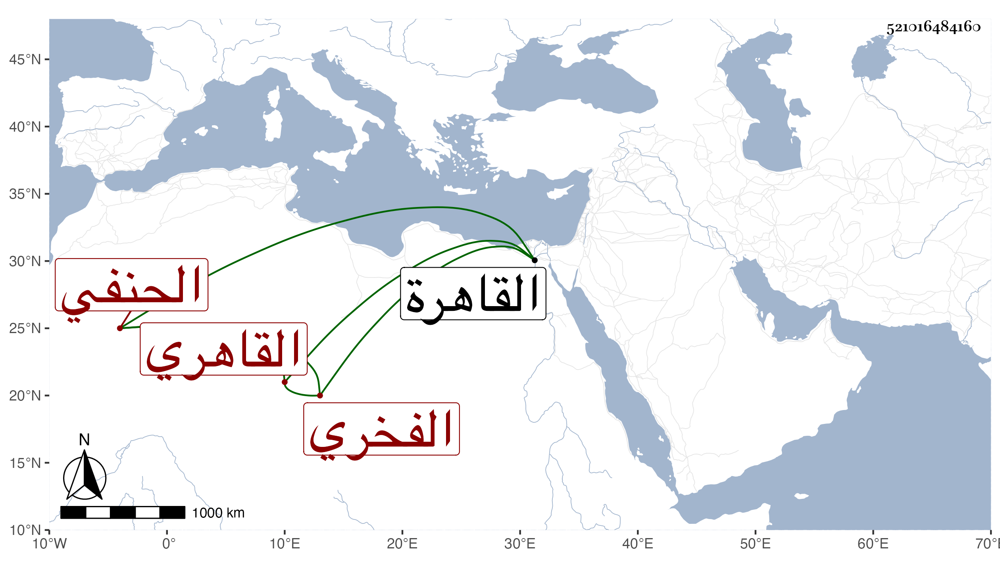

0902Sakhawi.DawLamic.ITO20230111-ara1.EIS1600.521016484160
Biography ID: 521016484160
669
علي بن برد بك نور الدين القاهري الفخري الحنفي كان أبوه من مماليك الناصر فرج بن برقوق فولد له هذا في صفر سنة ثمان وثلاثين وثمانمائة بالقاهرة وحفظ القرآن والقدوري في الفقه والكافية في النحو وأخذ الفقه عن الشمني والنحو والصرف عن ابن قديد ولازم التقي الحصني حتى سمع عليه غالب ما قرئ عليه في الأصلين والمنطق والحكمة والجدل والمعاني والبيان والصرف وأخذ حساب الغبار عن الشمني والمفتوح عنه وعن السيد علي الأزهري تلميذ ابن المجدي والعروض عن الشهاب الأبشيطي والشمني وحضر دروس الأمين الأقصرائي والشرواني وكذا أخذ عن أبي الفضل المغربي في الكافية لابن ملك وسمع الحديث على جماعة ولازم المشايخ بذهنه الفائق وفهمه الرائق وقريحته الوقادة وفكرته المنقادة وطبعه السليم ونظره المستقيم إلى أن فاق الأقران في زمن يسير وربما قرأ عليه بعض الطلبة مع الاسترواح وقلة الكتب وميل إلى المجون لمزيد ظرف وتهتك وعدم تصون لا سيما في نظمه فقد اتي فيه بقبائح حتى أنه عمل في معشوق له مقامة استعمل فيها كثيرا من ألفاظ اليهود وعباراتهم التي لا يحسنها قسيسهم لظنه أن أصوله منهم ويقال أن ابن عثمان ملك الروم راسل في إنكار أمور تبلغه فاستعين به في جوابه فكان نهاية في معناه وقد أهانه الشرف المناوي مرة ولذا هجاه غير مرة بما لا تجوز حكايته فضلا عن إنشائه إلا مقرونا ببيانه ، ولم يحصل من الدنيا على طائل ولا كان في الشكل والهيئة بكامل نعم كان كثير التفنن نادرة من نوادر الدهر وقد كتبت عنه من نظمه ورأيت مباحثه وسمعت من يحكي أنه ما مات حتى حسن حاله لا سيما وقد تعلل مدة مما أرجو التكفير عنه به . مات في ليلة الأحد سابع عشر رمضان سنة اثنتين وسبعين وصلي عليه بباب النصر في جمع كثير سامحه الله وإيانا ومما كتبته من نظمه في شيخه الحصني :
| أرى الجهل قد عم البلاد وأهلها | ولم أر فيها من يقرر في فن |
| فيا معشر الإخوان بالله حصنوا | نفوسكم من عسكر الجهل بالحصنى |
ومن نظمه غير هذا .
